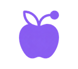
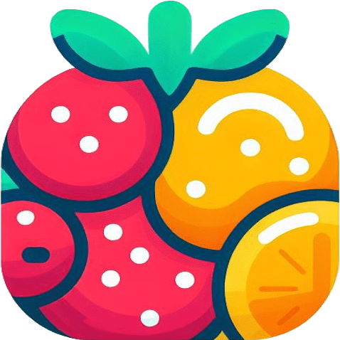

Sobre míSobre mi
Profesor de informática con experiencia docente desde 2018 y una sólida base técnica como programador y arquitecto de software. Disfruto enseñando tecnologías emergentes, en particular la Inteligencia Artificial, con una formación autodidacta avanzada en este campo. Imparto cursos y talleres de IA para centros educativos y, desde 2025, formación al profesorado. Professor d'informàtica amb experiència docent des del 2018 i una sòlida base tècnica com a programador i arquitecte de software. Gaudisc ensenyant tecnologies emergents, particularment la Intel·ligència Artificial, amb una formació autodidacta avançada en aquest camp. Impartisc cursos i tallers d'IA per a centres educatius i, des del 2025, formació al professorat.
ProyectosProjectes

Plataforma educativa con Inteligencia Artificial para el profesorado. Reúne más de 40 asistentes de generación de materiales, un módulo completo de gestión de aula y una pizarra digital con proyección ilimitada. Alineada con la LOMLOE, sin publicidad y con servidores europeos. Plataforma educativa amb Intel·ligència Artificial per al professorat. Reunix més de 40 assistents de generació de materials, un mòdul complet de gestió d'aula i una pissarra digital amb projecció il·limitada. Alineada amb la LOMLOE, sense publicitat i amb servidors europeus.
codocente.comWeb de recursos de informática de uso libre para que el profesorado los utilice en sus clases: unidades didácticas, actividades, escape rooms y materiales para ESO, Bachillerato y Formación Profesional. Web de recursos d'informàtica d'ús lliure perquè el professorat els utilitze a les seues classes: unitats didàctiques, activitats, escape rooms i materials per a ESO, Batxillerat i Formació Professional.
vicentf.webprofes.com
Aplicación educativa para fomentar el consumo de fruta entre el alumnado mediante un sistema de puntos y recompensas que combina gamificación y hábitos saludables. Aplicació educativa per fomentar el consum de fruita entre l'alumnat mitjançant un sistema de punts i recompenses que combina gamificació i hàbits saludables.
fruitity.comExperiencia ProfesionalExperiència Professional
Coordinación y gestión de los ciclos formativos del centro, planificación académica y organización pedagógica de la Formación Profesional. Coordinació i gestió dels cicles formatius del centre, planificació acadèmica i organització pedagògica de la Formació Professional.
Docencia de informática en ESO, Bachillerato y Ciclo Formativo de Grado Medio. Docència d'informàtica a ESO, Batxillerat i Cicle Formatiu de Grau Mitjà.
Desarrollo de aplicaciones web y software empresarial. Experiencia en múltiples tecnologías y frameworks de desarrollo. Desenvolupament d'aplicacions web i software empresarial. Experiència en múltiples tecnologies i frameworks de desenvolupament.